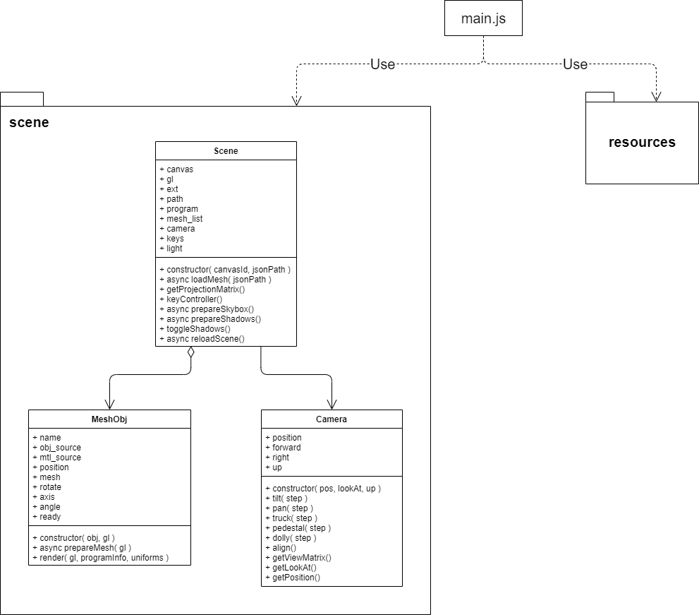
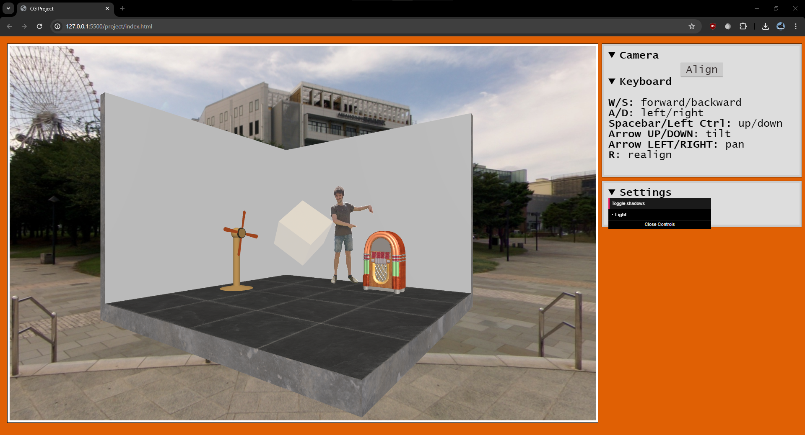
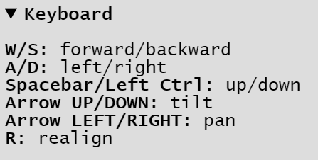
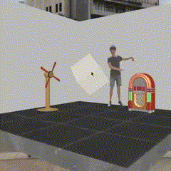
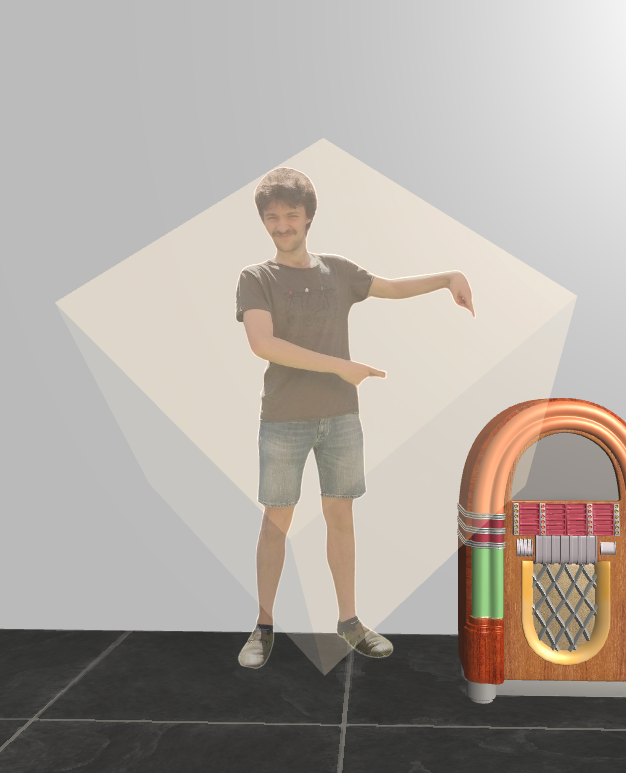
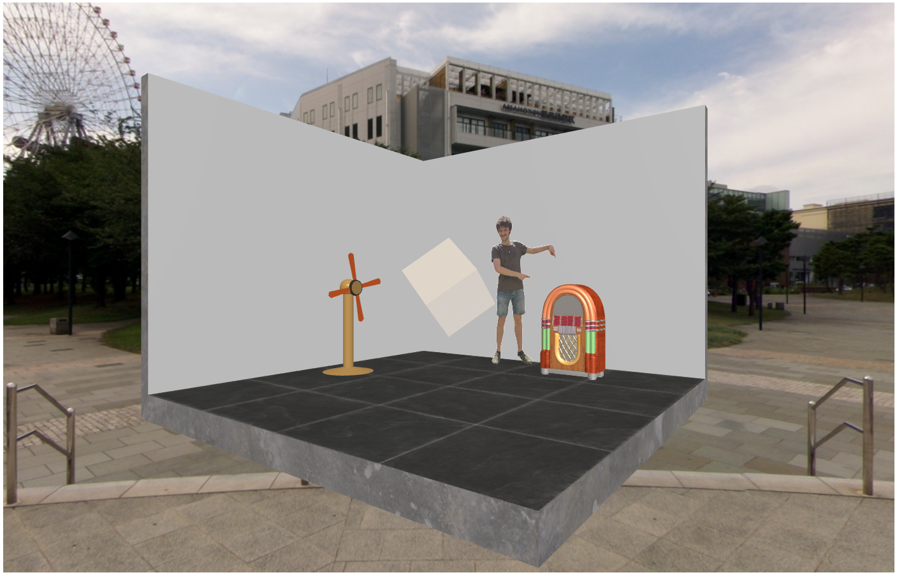
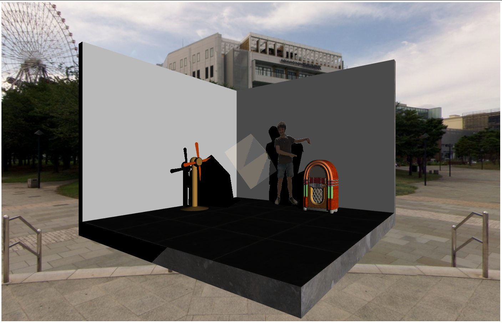
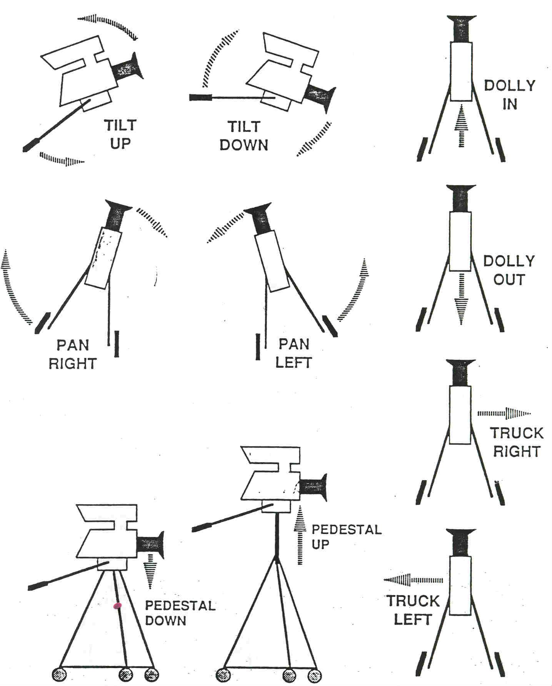

A.A. 2023-2024
Il seguente progetto è stato realizzato come prova
finale per il corso di "Fondamenti di Computer
Graphics M" tenuto dal professor Casciola.
L'obiettivo è sviluppare un'applicazione web
interattiva utilizzando la libreria grafica WebGL,
JavaScript e il linguaggio di shading OpenGL ES SL.
L'applicazione risultante consiste di una scena 3D
interagibile contenente più mesh 3D texturate.
L'architettura del progetto consiste di due package:

 L'interfaccia dell'applicazione è molto semplice: da una parte c'è il canvas per disegnare la scena e dall'altra una colonna contenente i comandi per l'interazione e un menù a tendina per l'interazione.
Per gestire le diversi impostazioni è stata utilizzata la libreria dat.GUI.
Il movimento all'interno dell'ambiente 3D può essere gestito in due modi:


I tasti per controllare il movimento la direzione di vista sono visibili
espandendo il menù laterale.
L'interazione con il dispositivi dotati di mouse è stata gestita tramite
gli eventi della famiglia mouseevent.
Per l'interazione con dispositivi dotati di schermo touch sono stati
utilizzati gli eventi della famiglia touchevent, disponibili
in HTML5.
Rappresenta la scena 3D e si occupa di orchestrare tutte le operazioni: dall'inizializzazione del canvas al rendering della scena stessa.
All'istanziazione di un nuovo oggetto Scene, il metodo constructor esegue le seguenti operazioni:
Le mesh che verranno caricate e visalizzate sono indicate nel file json. Questa metodologia rende possibile creare più scene diverse semplicemente modificando i file json.
Di seguito è riportata la struttura del file json:
"meshes":[
{
"name":"mesh_1",
"obj_source":"./path/mesh.obj",
"mtl_source":"./path/mesh",
"position": [0, 0, 0]
}
]Ogni entry ha le seguenti proprietà:
Il valore dell'attributo position viene sommato alle coordinate della geometria della mesh, traslandolo nella posizione desiderata.
Si occupa di leggere il file json contenente le mesh da caricare e
per ciascuno istanzia un oggetto mesh_obj che viene salvato in
scene.mesh_list.
Si occupa di calcolare la projection matrix utilizzando la funzione
perspective(...) della libreria m4.js.
Si occupa di intercettare gli input da tastiera e invoca le funzioni
che modificano la posizione e la direzione della camera.
Questo metodo è realizzato in modo da poter gestire più input
contemporanei e consentire, ad esempio, di muoversi e girare la
camera nello stesso istante.
Viene invocata ogni qualvolta viene disegnato un frame.
Si occupa di caricare la cubemap texture utilizzata per lo skybox.
I dati vengono poi salvati in scene.skybox.
Si occupa di preparare i dati per la gestione delle ombre, ovvero:
Si occupa gestire lo switch dallo shader program con ombre a quello senza e viceversa.
Per motivi di scope non è un metodo della classe
Scene, ma una funzione a sé.
Si occupa di eseguire le seguenti operazioni:
keyController() per la
gestione degli input da tastierascene.camera che è un oggetto
Camerascene.shadow.enable:
Per il rendering è abilitato gl.BLEND quindi,
se il materiale di una mesh ha opacità minore di uno,
questo verrà disegnato con una trasparenza.

La scena disegnata con lo shader program di base ha le seguenti caratteristiche:

La tecnica di rendering avanzata implementata nel progetto è il calcolo delle ombre, realizzata grazie alla tecnica dello shadow mapping.
// riguardare bene
Per disegnare le ombre si parte dal punto di vista della luce, che
applica l'algoritmo di Shadow Buffer, che funziona in maniera
analoga allo Z-Buffer, considerando la distanza delle mesh da dal
punto luce.
Il risultato di questa operazione è la Shadow Map, che viene
considerata insieme alla Depth Map ottenuta dal punto di vista
dell'osservatore per determinare se un punto è in ombra oppure no.

Rappresenta la camera da cui viene osservata la scena.
Il punto di vista può essere spostato all'interno
dell'ambiente 3D in maniera libera.
L'orientamento della camera viene definito (ma anche
modificato) dai seguenti tre assi ortogonali espressi
in coordinate globali:
I movimenti della camera sono presi da quelli utilizzati nella produzione video.

Ruota la visuale in alto o in basso, si ottiene ruotando la camera rispetto al vettore right.
Ruota la visuale orizzontalmente, si ottiene ruotando la camera rispetto al View-up vector.
Modifica la posizione della camera lateralmente, lasciando
invariata la direzione della visuale. Si ottiene
moltiplicando il vettore right per dist e
sommando il risultato alla posizione attuale della camera.
Alza o abbassa la posizione della camera, si ottiene sommando
il prodotto tra il View-up vector e dist alla
posizione attuale della camera.
Avvicina o allontana la camera al punto osservato,
si ottiene sommando alla posizione attuale il
prodotto tra dist e il vettore forward.
Riallinea la vista della camera all'orizzonte.
Calcola e restituisce la viewMatrix. Il calcolo viene eseguito utilizzando i metodi della libreria m4.js.
Restituisce la posizione della camera.
Questa classe si occupa di gestire le mesh visibili, dal
loro caricamento fino al rendering.
Il costruttore prende le informazioni relative a una
mesh contenute in una entry del file json, quali:
Le mesh sono salvate nella cartella project/data,
alcuni sono stati scaricati da internet, mentre altri sono
stati disegnati su Blender.
Il formato utilizzato per l'utilizzo con WebGL è Wavefront obj,
a cui è associato il file mtl che descrive le proprietà dei
materiali che compongono le mesh.
Si occupa di creare i buffer per passare gli attribute al
vertex shader, per fare ciò sfrutta la funzione
createBufferInfoFromArrays(gl, data) della
libreria webglUtils.js.
Si occupa di disegnare la mesh utilizzando lo shader
program e gli uniform specificati nei parametri.
Tramite le funzioni della libreria webglUtils.js
vengono passati attribute e uniform allo shader
program. Utilizzando la funzione
webglUtils.drawBufferInfo(gl, bufferInfo)
viene invocata la gl.drawElements o la
gl.drawArrays in base alla presenza degli
indici o meno.
Per la realizzazione del progetto, oltre alle slide e al codice visto durante il corso, è stato fatto riferimento ai seguenti articoli: